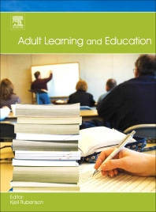

- Van Petegem, P., & Imbrecht, I. (2012). Organisatie Volwassenenonderwijs.
- Boeren, E., & Nicaise, I. (2009). Wie neemt deel en waarom?
- Knowles (2005). An andragogical process model for learning. (H6 Knowles)
- Knowles (2005). Andragogy in practice. (H7 Knowles)
- Jarvis, P. (2010). Perspectives on learning theory. (H5 Jarvis)
Planning lessen (vrijdagvoormiddag)
- 17 feb: Les 1
- 14 feb: Les 2
- 03 mrt: Les 3
- 10 mrt: Les 4
- 17 mrt: geen les
- 24 mrt: geen les
- 31 mrt: Les 5
|
- 07 apr: geen les
- 14 apr: geen les
- 21 apr: Les 6
- 28 apr: Les 7
- 05 mei: Les 8
- 12 mei: Les 9
- 19 mei: Les 10*
|
Adult Learning and Education

Elementen van de opdracht
- Schrijf samenvatting van het artikel/hoofdstuk
- Gebruik template (zie minerva)
- Maak een presentatie voor de groep
- Gebruik webslides of template (zie minerva)
- Layout mag anders, gebruik zelfde elementen
- Maximum 10 minuten (5 elk)
TITEL I
Gemeenschapsaangelegenheid
TITEL II
Definities
TITEL III
De opdracht en de organisatie van het volwassenenonderwijs
HOOFDSTUK I
Opdracht van het volwassenenonderwijs
Definitie
- Volwassenenonderwijs
- Onderwijs dat erkend en gefinancierd of gesubsidieerd wordt door de Vlaamse Gemeenschap en dat georganiseerd wordt door de erkende Centra voor Volwassenenonderwijs en de erkende Centra voor Basiseducatie
Opdracht van het volwassenenonderwijs
- Het volwassenenonderwijs heeft als
doelstelling enerzijds de cursisten de
kennis, vaardigheden en attitudes bij
te brengen die nodig zijn voor
- de persoonlijke ontwikkeling
- het maatschappelijk functioneren
- het verder deelnemen aan onderwijs
- het uitoefenen van een beroep
- of het beheersen van een taal
- en anderzijds de cursisten in staat te
stellen erkende studiebewijzen te behalen.
Opdracht van het volwassenenonderwijs
Opdrachten voor centra:
- 1° onderwijs organiseren in overeenstemming met de bepalingen van dit decreet;
- 2° leertrajectbegeleiding organiseren op het niveau van de individuele cursist;
- 3° de educatieve behoeften detecteren die aanwezig zijn bij de eigen doelgroep;
- 4° het aanbod aan volwassenenonderwijs van de centra op elkaar afstemmen;
- 5° streven naar samenwerking en afstemming tussen de centra en andere publieke verstrekkers van opleidingen voor volwassenen;
- 6° reeds verworven competenties beoordelen of certificeren.xxx
1. onderwijs organiseren in
overeenstemming met de
bepalingen van dit decreet;
2. leertrajectbegeleiding organiseren
op het niveau van de individuele
cursist;
9
Opdrachten voor centra:
3. de educatieve behoeften detecteren
die aanwezig zijn bij de eigen
doelgroep;
4. het aanbod aan
volwassenenonderwijs van de
centra op elkaar afstemmen;
10
Opdrachten voor centra:
5. streven naar samenwerking en
afstemming tussen de centra en
andere publieke verstrekkers van
opleidingen voor volwassenen;
6. reeds verworven competenties
beoordelen of certificeren.
11
HOOFDSTUK II
De indeling van het
volwassenenonderwijs
12
Volwassenenonderwijs
• Art. 4. Het volwassenenonderwijs
wordt ingedeeld in:
‣ Basiseducatie
‣ Secundair volwassenenonderwijs
‣ Hoger beroepsonderwijs
13
Niveau Lager onderwijs + 1e graad sec.
• Leergebieden:
‣
‣
‣
‣
Nederlands
Wiskunde
Maatschappijoriëntatie
Informatie- en
communicatietechnologie
14
Secundair volwassenenonderwijs
• Op het niveau van het voltijds
secundair onderwijs, uitgezonderd de
eerste graad
15
Hoger beroepsonderwijs
• Beroepsgerichte opleidingen op het
niveau van het hoger onderwijs en
die niet leiden tot de graad van
bachelor of de graad van master
16
HOOFDSTUK III
De leergebieden en de studiegebieden
17
Leergebieden basiseducatie
1. Alfabetisering Nederlands tweede
taal;
2. Nederlands;
3. Nederlands tweede taal;
4. wiskunde;
5. maatschappijoriëntatie;
18
Leergebieden basiseducatie
6. informatie- en
communicatietechnologie;
7. talen.
19
Studiegebieden secundair
volwassenenonderwijs
1° algemene vorming;
2° auto;
3° bijzondere educatieve noden;
4° boekbinden;
5° bouw;
6° chemie;
20
Studiegebieden secundair
volwassenenonderwijs
7° decoratieve technieken;
8° diamantbewerking;
9° grafische technieken;
10° handel;
11° hout;
12° huishoudelijk onderwijs;
21
Studiegebieden secundair
volwassenenonderwijs
13° informatie- en
communicatietechnologie;
14° juwelen;
15° kant;
16° koeling en warmte;
17° land- en tuinbouw;
22
Studiegebieden secundair
volwassenenonderwijs
18° leder bewerking;
19° lichaamsverzorging;
20° maritieme opleidingen;
21° mechanica-elektriciteit;
22° mode;
23° muziekinstrumentenbouw;
23
Studiegebieden secundair
volwassenenonderwijs
24° Nederlands tweede taal;
25° personenzorg;
26° smeden;
27° talen richtgraad 1 en 2;
28° talen richtgraad 3 en 4;
29° textiel;
24
Studiegebieden secundair
volwassenenonderwijs
30° toerisme;
31° voeding.
25
Studiegebieden hoger
beroepsonderwijs
1° biotechniek;
2° gezondheidszorg;
3° handelswetenschappen en
bedrijfskunde;
26
Studiegebieden hoger
beroepsonderwijs
4° industriële wetenschappen en
technologie;
5° onderwijs;
6° sociaal-agogisch werk.
27
HOOFDSTUK IV
De eindtermen, specifieke eindtermen
en basicompetenties
28
AFDELING I
De basiseducatie en het secundair
volwassenenonderwijs
29
Art 11 ev
• Over het algemeen gelijk:
‣ Secundair volwassenenonderwijs volgt
dezelfde eindtermen als voltijds
secundair onderwijs
‣ Ook voor lager en eerste graad SO
30
Art. 14
• Vrijheid om leerplannen vast te
stellen
• Vrijheid om agogische methodes te
kiezen
• Leerplannen moeten wel worden
goedgekeurd door Vlaamse Regering
31
AFDELING II
Hoger beroepsonderwijs en de
specifieke lerarenopleiding
32
Art. 16
• De basiscompetenties zijn van
toepassing op de opleidingen vh
hoger beroepsonderwijs, uitgz. de
opln v/h studiegebied onderwijs.
• De basiscompetenties van het hoger
beroepsonderwijs worden bepaald
door de Vlaamse Regering.
33
Art. 17
• CVO: studiegebied onderwijs: SLO
‣ Afwijking van art 24 & 25 (opleidings-
profielen door VR na VLOR)
‣ SLO: 60 studiepunten.
‣ Praktijkcomponent: 30 studiepunten
[Middelen via ENW of regionaal platform]
34
Art. 18
• Beroepsprofiel van de leraar
‣ VR na advies VLOR, VP dient te
bekrachtigen
• Basiscompetenties van de leraar
‣ VR na advies VLOR
35
Art. 19
• Preservice training
• Inservice training
• LIO-baan
‣ Minimum 500 uren
‣ overeenkomst
36
HOOFDSTUK V
De organisatie van het onderwijs door
de Centra voor Basiseducatie en de
Centra voor Volwassenenonderwijs
37
Art. 23
• Modulair
‣ Opleiding = [Module ... ]
‣ Onafhankelijk
‣ Sequentieel
38
Art. 24
• Opleidingsprofiel (VR na VLOR)
‣
‣
‣
‣
Minimaal aantal lestijden van opleiding
Aantal modules
Lestijden/module voor financiering
ET, SET of BC / module
39
Art. 28
• Contact of gecombineerd onderwijs
‣ Contactonderwijs: minimaal 25 %
‣ Afstandsonderwijs
‧ Cursusmateriaal is geschikt voor
multimediaal gebruik
‧ Evaluatie is duidelijk omschreven
‧ Deelname wordt systematisch opgevolgd
40
HOOFDSTUK VI
Toelatingsvoorwaarden
41
Art. 31
• Basiseducatie
‣ Voldaan hebben aan deeltijdse
leerplicht
‣ Leergebieden alfabetisering
Nederlands tweede taal & talen:
voltijdse leerplicht
42
Art. 32
• Secundair volwassenenonderwijs
‣ Voldaan hebben aan voltijdse leerplicht
‣ Studiegebied algemene vorming:
deeltijdse leerplicht
43
Art. 34
• Hoger beroepsonderwijs
‣ Voldaan hebben aan deeltijdse
leerplicht
‣ Bijkomend: 1 studiebewijs
44
1° een studiegetuigschrift van het tweede leerjaar van de
derde graad van het secundair onderwijs;
2° een diploma van het secundair onderwijs;
3° een certificaat van een opleiding van het secundair
onderwijs voor sociale promotie van minimum 900
lestijden;
4° een certificaat van een opleiding van het secundair
volwassenenonderwijs van minimum 900 lestijden;
5° een diploma van het hoger onderwijs voor sociale
promotie;
6° een diploma van het hoger beroepsonderwijs;
7° een diploma van het hoger onderwijs van het korte type
met volledig leerplan;
8° een diploma van bachelor of master;
45
9° of een studiebewijs dat als gelijkwaardig wordt erkend...
Art 34, § 2
• Centrumbestuur kan afwijkende
toelatingsvoorwaarden opnemen.
• Kunnen enkel rekening houden met:
‣ Humanitaire redenen
‣ Medische, psychische of sociale
‣ Algemeen niveau cursist (toel. Proef)
46
• Toelatingsproef
‣ Uiterlijk de vijfde dag voor het einde
van de inschrijvingsperiode
‣ De directeur kan de organisatie van
een toelatingsproef op verzoek van de
cursist niet weigeren
‣ Voorwaarden org. proef in reglement
47
Art. 35
• Geen aanvullende
toelatingsvoorwaarde voor een
aanvangsmodule of een niet-
sequentieel geordende module
• Wel voor een sequentieel geordende
module (volgtijdelijkheden)
48
• Deelcertificaat van sequentieel
voorafgaande module
• Attest of certificaat van andere
vormings- of opleidinginstelling
• Titel van beroepsbekwaamheid
(ervaringsbewijs)
49
• http://onderwijs.vlaanderen.be/edulex
/database/document/document.asp?
docid=13552
• http://www.ond.vlaanderen.be/wetwij
s/thema.asp?id=24
• www.ervaringsbewijs.be
50
• Directeur oordeelt
‣ o.b.v. diploma, certificaat, of
getuigschrift uit het onderijs
‣ o.b.v. attest of certificaat uit andere
vormings- of opleidingsinstelling
‣ o.b.v. een toelatingsproef
51
Art. 36
• Indien geen studiebewijs Nederlands
tweede taal dan ligt bevoegdheid
voor intake, testing en doorverwijzing
bij de Huizen van het Nederlands
• http://www.huizenvanhetnederlands.b
e/
52
Art. 37
• Volgorde inschrijven (ev.
Wachtlijsten) = volgorde voldoen
inschrijvingsvoorwaarden (FCFS)
‣
‣
‣
‣
Toelatingsvoorwaarden
Inschrijvingsgeld betaald of vrijgesteld
Akkoord met centrumreglement
Akkoord met agogisch project
53
HOOFDSTUK VII
Evaluatie, evaluatiereglement en
studiebekrachtiging
54
Art. 38
• Evaluatie
‣ Deskundige beoordeling of de
doelstellingen uit leerplan bereikt zijn
‣ Permanente / afsluitende evaluatie
‣ Voor elke module een evaluatie
‣ Hoger beroepsonderwijs: tweede
evaluatieperiode kan
55
Art. 39
• Evaluatiereglement
‣
‣
‣
‣
‣
Voorwaarden
Vorm
Tijdvakken
Samenstelling commissies
Wijze van beraadslaging
56
• ...
‣ Voorwaarden tweede evaluatieperiode
in HBO
‣ Procedure voor behandeling conflicten
etc.
‣ Procedure voor vrijstellingen van
evaluaties
57
Art. 40
• Studiebewijzen in het
volwassenenonderwijs:
‣
‣
‣
‣
Deelcertificaat
Certificaat
Getuigschrift
Diploma
58
Art. 41
• Welk studiebewijs bekrachtigd welke
opleiding
• Art 42 – diploma secundair onderwijs
59
HOOFDSTUK VIII
Ondersteuning van het
volwassenenonderwijs
60
AFDELING I
Vlaams Ondersteuningscentrum voor
het volwassenenonderwijs
61
Art. 43
• 1 ondersteuningscentrum
gesubsidieerd door de Vlaamse
Regering
62
Art. 44
• Vlaams ondersteuningscentrum voor
het Volwassenenonderwijs (VOCVO)
• Doelstelling: ondersteunen CBE’s en
CVO’s
• Ondersteunen met respect voor het
eigen agogisch project van de centra
63
Art. 45
• Opdrachten VOCVO
‣ Agogische en organisatorische
ondersteuning
‣ Deskundigheid personeelsleden
bevorderen
‣ Onderwijsvernieuwing en kwaliteitszorg
coördineren, stimuleren en faciliteren
64
• ...
‣ Centra ondersteunen bij het realiseren
van ET, SET, en BC bij cursisten
‣ Samen met pedagogische
begeleidingsdiensten opdracht in Art
49 uitvoeren (i.e. m.b.t. kennis- en
expertiseontwikkeling)
65
Art. 46
• VOCVO krijgt enkel subsidies als
‣ Vzw
‣ Afgevaardigden centrumbesturen in
algemene vergadering
‣ Beleidsplan (5j), ondersteuningsplan
(1j)
‣ Activiteitenverslag + financieel (1j)
66
Art. 47
• Subsidie
‣ Minstens 788.000 euro
‣ ...
67
AFDELING II
Kennis- en expertiseontwikkeling
in het volwassenenonderwijs
68
Art. 49
• VOCVO met pedagogische
begeleidingsdiensten
• 9 verschillende opdrachten, o.m.
expertise m.b.t.
‣ Afstandsleren
‣ Geletterdheid
69
AFDELING III
Kwaliteitscontrole en evaluatie
70
Art. 51
• Evaluatie in 2012
71
HOOFDSTUK IX
Kwaliteitszorg
72
AFDELING I
Algemene aspecten kwaliteitszorg
73
AFDELING II
De specifieke lerarenopleiding
74
TITEL IV
Structuur van het
volwassenenonderwijs
75
TITEL V
Financiering of subsidiëring van het
volwassenenonderwijs
76
TITEL VI
Personeel
77
TITEL VII
Overleg
78
TITEL VIII
Wijzigingsbepalingen
79
TITEL IX
Slotbepalingen
80